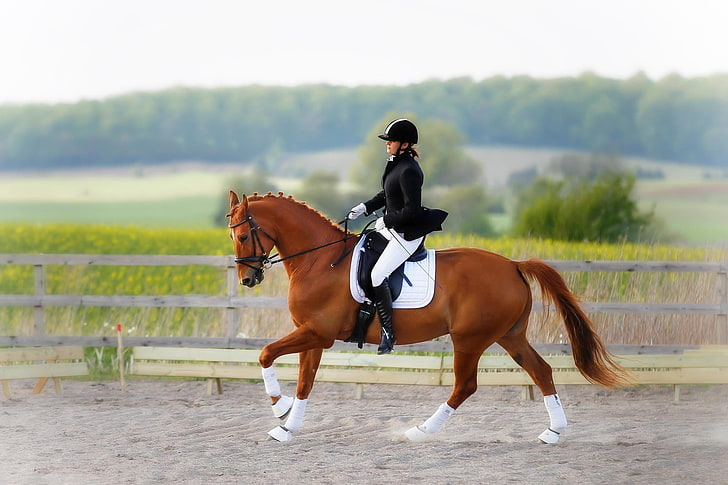

As competições de hipismo tiveram origem na Grécia Antiga, onde se pensava que era necessária uma parceria
perfeita entre cavaleiro e cavalo para sobreviver em batalha. O adestramento foi, portanto, desenvolvido como
uma forma de treinar os cavalos para a guerra. Provas equestres sugiram nos Jogos Olímpicos antigos como
corridas de bigas, um espetáculo ousado e emocionante. A arte da equitação caiu em esquecimento até seu
ressurgimento na Renascença. O adestramento atingiu seu auge com a criação da mundialmente famosa Escola
Espanhola de Equitação em Viena, em 1729, que lançou as bases para a modalidade moderna.
Regras no Hipismo
Prova de Saltos (Show Jumping): Nesta modalidade, os competidores devem completar um percurso de obstáculos
dentro do tempo estipulado, sem cometer faltas. Faltas podem ocorrer por derrubar obstáculos, refusos
(recusas do cavalo em saltar), excesso de tempo, entre outros.
Dressage (Ensino): Aqui, os conjuntos (cavalo e cavaleiro) realizam uma série de movimentos coreografados de
forma precisa e harmoniosa. São avaliados critérios como precisão, fluidez e a execução dos movimentos.
Critérios de Avaliação: Os juízes avaliam cada performance com base em critérios específicos para cada
modalidade. São levados em conta aspectos como técnica, estilo, precisão, apresentação e a relação entre
cavalo e cavaleiro.
Bem-Estar Animal: As regras também incluem normas para garantir o bem-estar dos cavalos, como cuidados
veterinários, condições adequadas de alojamento e manejo, e regras contra o uso de práticas consideradas
abusivas ou prejudiciais aos animais.

A sua origem nas Olimpíadas
A história do hipismo nos Jogos Olímpicos é rica e remonta ao início dos tempos modernos das Olimpíadas, no final
do século XIX. Aqui estão alguns marcos importantes e informações sobre a história olímpica do hipismo:
Introdução nos Jogos Olímpicos: O hipismo estreou nos Jogos Olímpicos modernos na edição de Paris em 1900.
Inicialmente, foram incluídas duas modalidades: Salto (Show Jumping) e Provas de Ensino (Dressage).
Desenvolvimento das Modalidades: Com o tempo, o hipismo olímpico expandiu-se para incluir outras
modalidades, como o Evento Completo (Eventing), que combina provas de Salto, Dressage e Cross-Country. Cada
modalidade tem suas próprias características e desafios específicos.
Participação de Mulheres: As mulheres começaram a competir no hipismo olímpico a partir de 1952, quando
foram introduzidas nas provas de Dressage. Desde então, o número de mulheres competindo nas várias
modalidades do hipismo olímpico aumentou significativamente.
Eventos Olímpicos Atuais: Atualmente, o hipismo olímpico inclui três modalidades principais nos Jogos de
Verão: Dressage, Salto e Eventing. Cada uma delas possui suas próprias competições individuais e por
equipes.
Desafios e Controvérsias: Assim como em qualquer esporte, o hipismo olímpico enfrentou desafios ao longo dos
anos, incluindo questões de bem-estar animal, mudanças nas regras de qualificação e adaptação às normas de
modernização.
Em resumo, o hipismo tem uma presença robusta e significativa nos Jogos Olímpicos, proporcionando momentos
memoráveis de competição e excelência atlética ao longo de mais de um século de história olímpica.